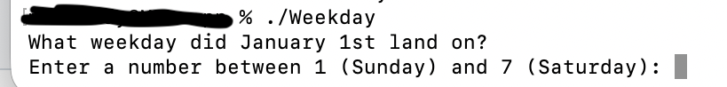
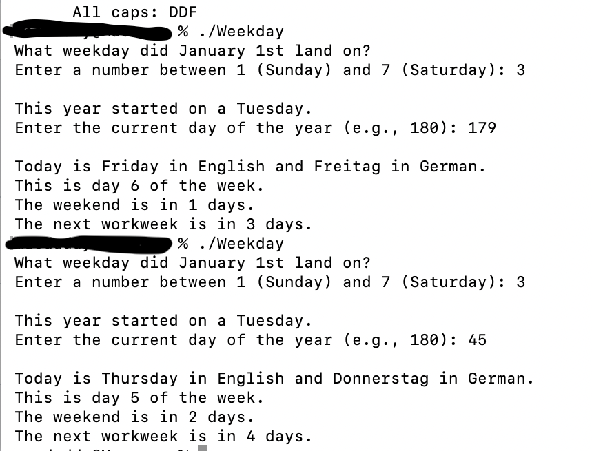

Weekday Calculator
Course: CSCI 235
Language(s): C++
GitHub Repository: Private Repository
Project Description
This program asks what weekday January 1 was and today's day of year, then figures out today's weekday, prints it in English and German, shows the week position, and displays how many days until Saturday and until next Monday.
How to Compile and Run
g++ -Wextra -std=c++17 -o Weekday Weekday.cpp
./Weekday
How the Program Works
The program prompts the user to enter a value such as a number or date. It then processes the input using conditional statements to determine the correct day of the week. Once the calculation is complete, the program displays the corresponding weekday as output.
Screenshots
Fig. 1. User enters input for the weekday calculation.

Fig. 2. Weekday output.
